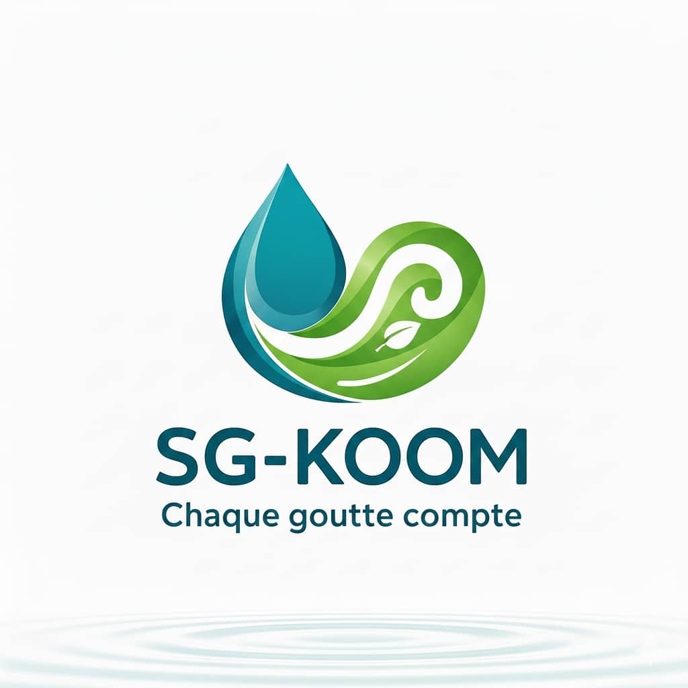

Eau · Assainissement · DomotiqueWater · Sanitation · Home automation
SG-KOOM
Un système domestique enterré qui traite et réutilise les eaux grises du foyer. Chaque goutte compte.
An underground household system that treats and reuses the home’s greywater. Every drop counts.

En brefOverview
SG-KOOM est un système enterré et modulable qui traite les eaux grises du foyer — ménage, vaisselle, lessive — pour les réutiliser. Il associe une filtration longue durée à une désinfection par LED UV, fonctionne en autonomie et se connecte à la domotique de la maison.
SG-KOOM is a modular, underground system that treats household greywater — from cleaning, dishes and laundry — so it can be reused. It pairs long-life filtration with UV-LED disinfection, runs on its own and connects to the home’s automation.
Le problèmeThe problem
Au Burkina Faso, comme dans de nombreux pays, les eaux grises sont mal collectées et souvent rejetées directement dans l’environnement, avec des risques pour la santé et les écosystèmes. Les solutions existantes, souvent végétales, sont peu durables ou difficiles à entretenir.
In Burkina Faso, as in many countries, greywater is poorly collected and often released straight into the environment, with risks for health and ecosystems. Existing solutions, often plant-based, are short-lived or hard to maintain.
La solutionThe solution
Un système biomimétique, entièrement enterré, qui suit le parcours de l’eau du foyer jusqu’à sa réutilisation. L’eau traitée sert à la lessive, à l’irrigation ou aux toilettes, ce qui renforce l’autonomie en eau de la maison.
A biomimetic, fully underground system that follows the water from the household to its reuse. The treated water goes to laundry, irrigation or toilets, making the home more self-sufficient in water.
CollecterCollect
Les eaux grises du ménage, de la vaisselle et de la lessive sont dirigées vers le module enterré.
Greywater from cleaning, dishes and laundry is routed to the underground module.
FiltrerFilter
Des filtres longue durée retiennent les impuretés ; ils ne se changent que tous les un à trois ans.
Long-life filters hold back impurities; they only need replacing every one to three years.
DésinfecterDisinfect
Une chambre à LED UV élimine les micro-organismes avant le stockage.
A UV-LED chamber kills micro-organisms before storage.
Réutiliser et superviserReuse and monitor
L’eau traitée alimente lessive, irrigation et toilettes ; des capteurs suivent le système depuis une interface web et mobile.
Treated water feeds laundry, irrigation and toilets; sensors track the system from a web and mobile interface.
Mon rôleMy role
Créateur et chef de projet, j’ai piloté la conception de bout en bout :
As founder and project lead, I drove the design end to end:
- conception et prototypage du système ;
- designing and prototyping the system;
- intégration des filtres et de la chambre de désinfection UV ;
- integrating the filters and the UV disinfection chamber;
- développement de la domotique et de la supervision par capteurs ;
- building the home automation and sensor-based monitoring;
- conception de l’interface web et mobile.
- designing the web and mobile interface.
TechnologiesTechnology
- TraitementTreatment
- PilotageControl
- Interface
- ConceptionDesign
Impact
Testé en pilote, SG-KOOM réduit nettement les rejets d’eaux grises dans l’environnement et augmente la quantité d’eau réutilisable pour les usages domestiques non potables.
Tested in a pilot, SG-KOOM clearly reduces greywater discharge into the environment and increases the water available for non-drinking household uses.
- 1er prix1st prizeParcours Entrepreneurs 2iE, 20252iE Entrepreneurs Programme, 2025
- 1 à 3 ans1–3 yearsentre deux changements de filtresbetween filter changes